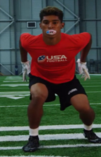
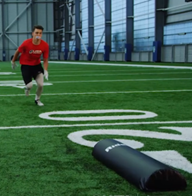
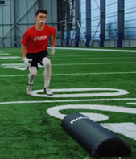
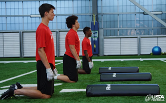
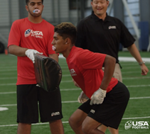
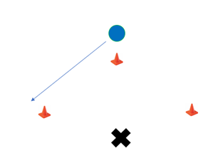

Tackle Drills
Author: Coach Kyle | Created: June 03, 2025
Tackling is one of the most important skills in youth football and must be taught with an emphasis on safety, technique, and control. Our drills focus on proper form—keeping the head up, wrapping up, and driving through the ball carrier—while building confidence and reinforcing good habits.
The Stance
4 Key points: Feet shoulder width, squeeze shoulder blades, sink hips, and hands ready for uppercuts.
- Feet: Shoulder width apart, weight on balls of feet
- Squeeze: Shoulder blades
- Sink: Bend the knees, lower waist
- Hands: Ready to throw upper cuts
Near Foot
Explode into the near foot stance from a proper football stance on command.

Swoop
Breakdown position as the tackler approaches with leading foot based on leverage.


Shoot
Explode forward from a kneeling position, sinking and hitting while keeping the head up.

Upper Cuts
Drive for 5 yards using uppercuts. Can be practiced with an exercise ball for varied angles.

Near Hip
Track the runner's near hip to maintain proper leverage and positioning.

Run & Gather
Mirror the ball carrier and gather into a swoop when they sink their hips.
All Blacks Rugby - Tackle Form
Learn safe and effective tackling form used by the world-famous All Blacks rugby team.
Low Impact Tackling
Focus on technique and form without the heavy impact of full-speed contact.
Leverage Step and Drive
Practice the leverage step and drive using tackle tubes for safe, repetitive work.
Half-field Cornerback/Safety
Tackle tube drill specifically designed for defensive backs in open field situations.
Linebacker Fill Drill
Simulate filling gaps and attacking the ball carrier with a tackle tube and bags.